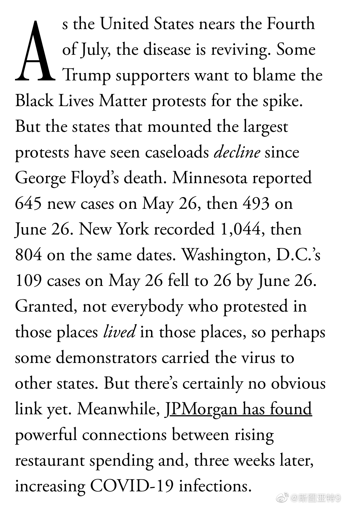

给理解能力差的川粉们贴一贴这篇文章的链接 网页链接 这段话根本就不是在讲BLM游行是不是对疫情没影响，而是说现在疫情显著变差的原因是特朗普。请自己看原文。@斯图亚特9:一些特朗普支持者把疫情变差归罪于支持黑人的游行示威，但爆发最大规模游行的州——明尼苏达、纽约、首都华盛顿的感染数都比一个月前还低。 
鲁尼属于早熟早衰吗？他和C罗同岁的啊，当年在曼联俩人一起崛起的。 //@意大利球迷俱乐部:35岁的鲁尼就坐在那里，满眼望去都是自己25岁时的影子@YouTube体育视界:【记忆中熟悉的鲁小胖】今晨英冠第40轮，此前取得4连胜的德比郡1-0击败普林斯顿豪取5连胜，而为球队进球的又是35岁的鲁尼。比赛第17分钟，德比郡获得前场任意球，队长鲁尼亲自操刀主罚，他助跑虽慢，但调整节奏后抬脚来了一记圆月弯刀，皮球直飞球门死角，门将毫无反应，这也是鲁尼加盟球队以来打进的第6粒进球。#吐槽个球# YouTube足球播报的微博视频 6553次播放 00:40
 网页链接 这段话根本就不是在讲BLM游行是不是对疫情没影响，而是说现在疫情显著变差的原因是特朗普。请自己看原文。
网页链接 这段话根本就不是在讲BLM游行是不是对疫情没影响，而是说现在疫情显著变差的原因是特朗普。请自己看原文。